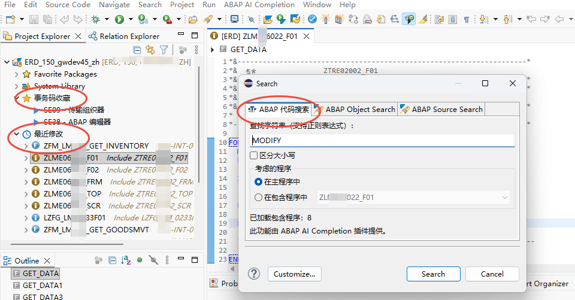

打开 Install New Software
在 Eclipse 菜单栏选择 Help > Install New Software...
从 Eclipse Marketplace 安装插件，配置一个可用的 AI 连接，再到在 ABAP 编辑器里用快捷键获得代码建议——按顺序完成下面的步骤即可。
本插件是在 SAP ABAP Development Tools（ABAP ADT） 之上工作的增强扩展：ABAP代码补全、事务码收藏、最近修改和代码搜索都依附于 ADT 的 ABAP 编辑器与项目树。
如果 Eclipse 中还没有 ABAP ADT，请先完成 ADT 的安装并连接 SAP 系统。没有 ADT，插件不会出现可用的 ABAP 编辑器与项目树入口，也无法正常使用。
在 Eclipse 菜单栏选择 Help > Install New Software...
在 Work with 输入框中填写以下地址并回车：
https://tools.hana.ondemand.com/latest
在列表中勾选 ABAP Development Tools（及其依赖组件），依次点击 Next、接受许可协议，最后点击 Finish。
安装完成后重启 Eclipse。随后在 ADT 中创建或打开 ABAP 项目并连接 SAP 系统，确认可以打开和编辑 ABAP 程序，ADT 即安装完成。
通过 Eclipse Marketplace 搜索并安装，整个过程不需要手动下载 JAR 文件。
在 Eclipse 菜单栏选择 Help > Eclipse Marketplace...
在搜索框中输入 ABAP AI Completion，在结果中找到同名的插件条目。
点击 Install，按向导确认安装项、接受许可协议；如出现证书确认提示，勾选信任后继续。
安装完成后选择 Restart Now 重启 Eclipse，插件即被加载。
重启后打开 Window > Preferences，左侧应出现 ABAP AI Completion 配置项，并且在ECLIPSE的“Window”菜单前也会增加一个ABAP AI Completion 菜单，说明插件已正常加载。
插件可支持配置使用当前市面上的大部分AI模型，当前默认已配置好一个名为 FREE_AI 的AI连接，此AI模型当前是免费使用的，首次使用只需把免费申请到的 API 密钥填进去就可以使用，也可以配置其他AI模型。
打开 https://platform.agnes-ai.cn/login，申请新账号并登录。
进入 https://platform.agnes-ai.cn/settings/apiKeys，创建一个新的 API Key，复制得到的 sk... 字符串。
在 Eclipse 中打开 Window > Preferences > ABAP AI Completion > AI 连接。
在左侧连接列表中选中 FREE_AI，把上一步复制的密钥粘贴到右侧的 API Key 输入框。
点击 Apply and Close 保存。连接名、Base URL 和模型保持默认即可。
API Key 等同于账号凭证，请勿截图外传或提交到代码仓库。Eclipse 中以掩码形式显示，仍建议仅在个人工作环境使用。
配置完成后，打开一个正在编辑的 ABAP 程序，把光标停到需要提示代码的位置，例如 ELSE. 之后回车另起一行，然后按 Ctrl+Shift+.。

默认快捷键为 Ctrl + Shift + .。如与其它软件冲突，可在 Window > Preferences > General > Keys 中搜索 “ABAP AI 补全” 重新绑定。
除 AI 补全外，插件还在 ADT 项目树与搜索中增加了三个日常开发用得上的扩展。
把常用 SAP 事务码收进 ADT 项目树，点击即可直接执行，不必每次手动输入事务码。
最近保存修改的 ABAP 对象会集中显示在项目树顶部，方便快速回到刚改过的程序。
类似 SAP GUI 的跨程序搜索，会连同主程序下的 INCLUDE 一起查找与替换，比 ADT 仅查当前程序更实用。

先确认已重启 Eclipse，并确认 Eclipse 版本为 4.7+、Java 为 17+。若仍不出现，重新执行 Help > Eclipse Marketplace...，确认插件显示为已安装。
依次检查：当前编辑器是否为 ADT 中的 ABAP 源文件；AI 连接是否已配置 API Key 并点击 Apply；网络是否能访问 AI 服务；可在 AI 连接页点击 Test Connection 验证配置。
可以先安装，但无法正常使用。请先在 Eclipse 中安装 ABAP ADT 并连接 SAP 系统，再安装本插件并配置 AI 连接。
该节点记录的是本插件安装后保存修改过的 ABAP 对象。首次使用时为空属于正常现象，保存一个 ABAP 程序后即可看到。